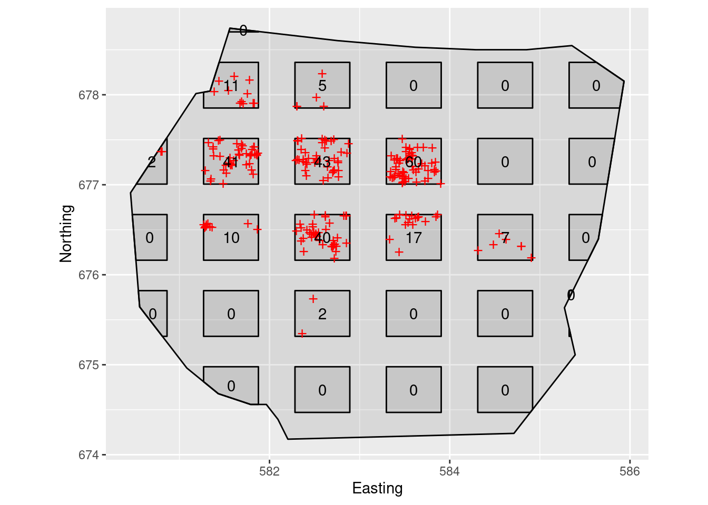
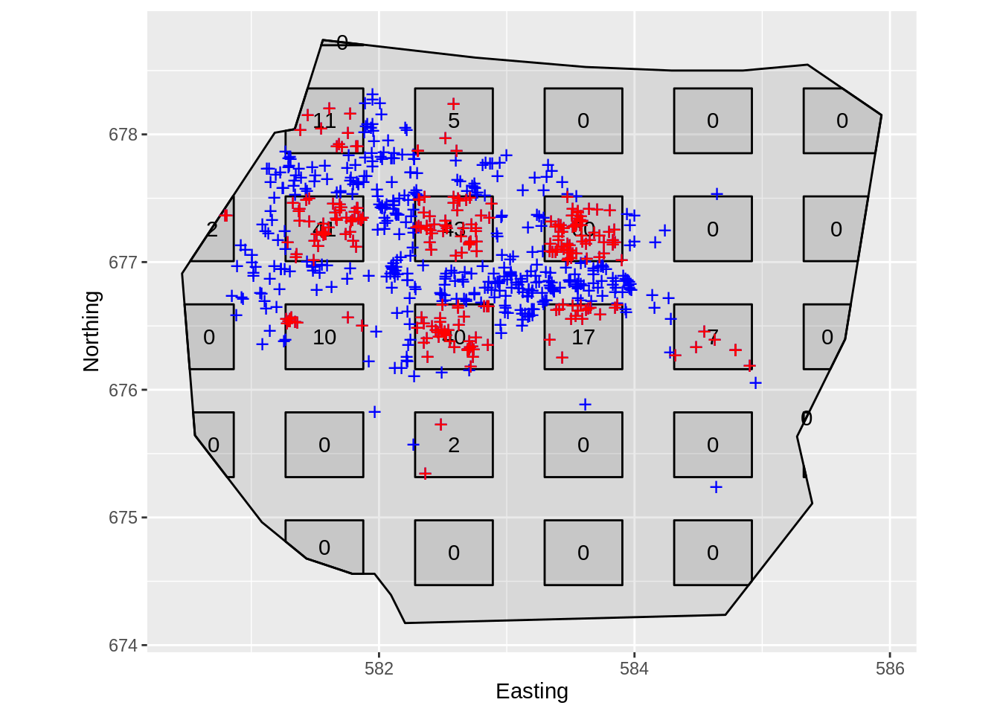
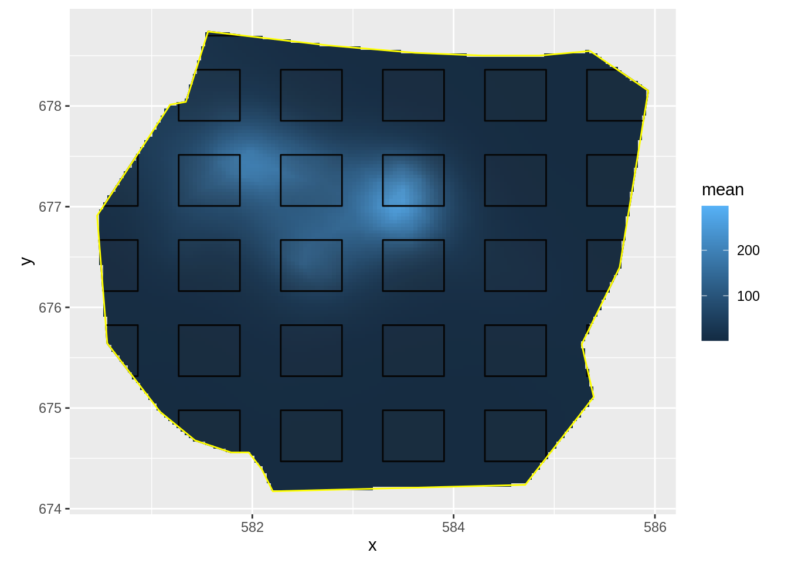
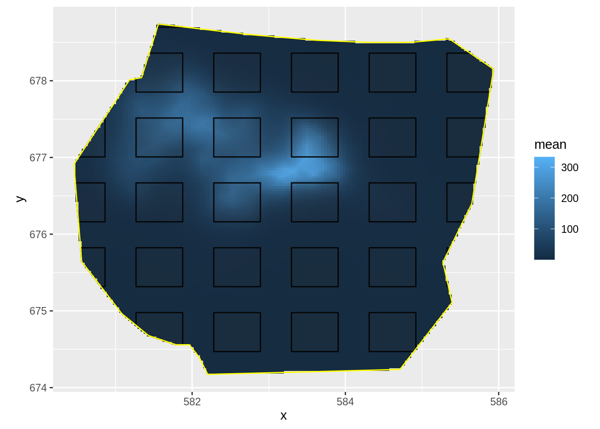
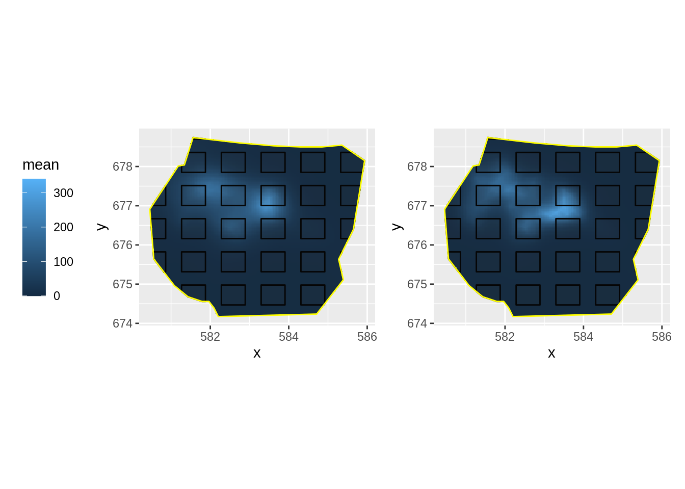

vignettes/web/2d_lgcp_plotsampling.Rmd
2d_lgcp_plotsampling.RmdThis practical demonstrates use of the samplers argument in lgcp, which you need to use when you have observed points from only a sample of plots in the survey region.
data(gorillas, package = "inlabru")This dataset is a list (see help(gorillas) for details. Extract the the objects you need from the list, for convenience:
nests <- gorillas$nests
mesh <- gorillas$mesh
boundary <- gorillas$boundary
gcov <- gorillas$gcovThe gorillas data also contains a plot sample subset which covers 60% of the survey region.
sample <- gorillas$plotsample
plotdets <- ggplot() +
gg(boundary) +
gg(sample$plots) +
gg(sample$nests, pch = "+", cex = 4, color = "red") +
geom_text(aes(label = sample$counts$count, x = sample$counts$x, y = sample$counts$y)) +
coord_fixed() +
labs(x = "Easting", y = "Northing")
plot(plotdets)
On this plot survey, only points within the rectangles are detected, but it is also informative to plot all the points here (which if it was a real plot survey you could not do, because you would not have seen them all).
plotwithall <- ggplot() +
gg(boundary) +
gg(sample$plots) +
gg(nests, pch = "+", cex = 4, color = "blue") +
geom_text(aes(label = sample$counts$count, x = sample$counts$x, y = sample$counts$y)) +
gg(sample$nests, pch = "+", cex = 4, color = "red") +
coord_fixed() +
labs(x = "Easting", y = "Northing")
plot(plotwithall)
The observed nest locations are in the SpatialPointsDataFrame sample$nests, and the plots are in the SpatialPolygonsDataFrame sample$plots. Again, we are using the following SPDE setup:
matern <- inla.spde2.pcmatern(mesh,
prior.sigma = c(0.1, 0.01),
prior.range = c(5, 0.01)
)Fit an LGCP model with SPDE only to these data by using the samplers= argument of the function lgcp( ):
cmp <- coordinates ~ my.spde(coordinates, model = matern)
fit <- lgcp(cmp, sample$nests, samplers = sample$plots, domain = list(coordinates = mesh))Plot the density surface from your fitted model
lambda.sample.plot <- ggplot() +
gg(lambda.sample) +
gg(sample$plots) +
gg(boundary, col = "yellow") +
coord_fixed()
lambda.sample.plot
Estimate the integrated intensity lambda. We compute both the overall integrated intensity, representative of an imagined new realisation of the point process, and the conditional expectation that takes the actually observed nests into account, by recognising that we have complete information in the surveyed plots.
Lambda <- predict(fit, ipoints(boundary, mesh), ~ sum(weight * exp(my.spde + Intercept)))
Lambda.empirical <- predict(
fit,
rbind(
cbind(ipoints(boundary, mesh), data.frame(all = TRUE)),
cbind(ipoints(sample$plots, mesh), data.frame(all = FALSE))
),
~ (sum(weight * exp(my.spde + Intercept) * all) -
sum(weight * exp(my.spde + Intercept) * !all) +
nrow(sample$nests))
)
rbind(
Lambda,
Lambda.empirical
)Fit the same model to the full dataset (the points in gorillas$nests), or get your previous fit, if you kept it. Plot the intensity surface and estimate the integrated intensity
fit.all <- lgcp(cmp, gorillas$nests,
samplers = gorillas$boundary,
domain = list(coordinates = mesh)
)
lambda.all <- predict(fit.all, pixels(mesh, mask = boundary), ~ exp(my.spde + Intercept))
Lambda.all <- predict(fit.all, ipoints(boundary, mesh), ~ sum(weight * exp(my.spde + Intercept)))Your plot should look like this:

The values Lambda.empirical, Lambda, and Lambda.all should be close to each other if the plot samples gave sufficient information for the overall prediction:
rbind(
Lambda,
Lambda.empirical,
Lambda.all,
Lambda.all.empirical =
c(nrow(gorillas$nests), 0, rep(nrow(gorillas$nests), 3), rep(NA, 4))
)
#> mean sd q0.025 median q0.975 smin smax cv
#> 1 639.7515 47.21888 564.1444 634.0125 732.3947 526.6813 852.7836 0.07380815
#> 2 640.4495 39.88428 563.3585 638.0405 713.2519 548.1338 738.8712 0.06227545
#> 3 648.5021 28.88316 593.5230 644.4842 707.5431 588.3395 717.6775 0.04453826
#> 4 647.0000 0.00000 647.0000 647.0000 647.0000 NA NA NA
#> var
#> 1 2229.6222
#> 2 1590.7556
#> 3 834.2367
#> 4 NANow, let’s compare the results
library(patchwork)
lambda.sample.plot + lambda.all.plot +
plot_layout(guides = "collect") &
theme(legend.position = "left") &
scale_fill_continuous(limits = range(c(0, 340)))
Do you understand the reason for the differences in the posteriors of the abundance estimates?